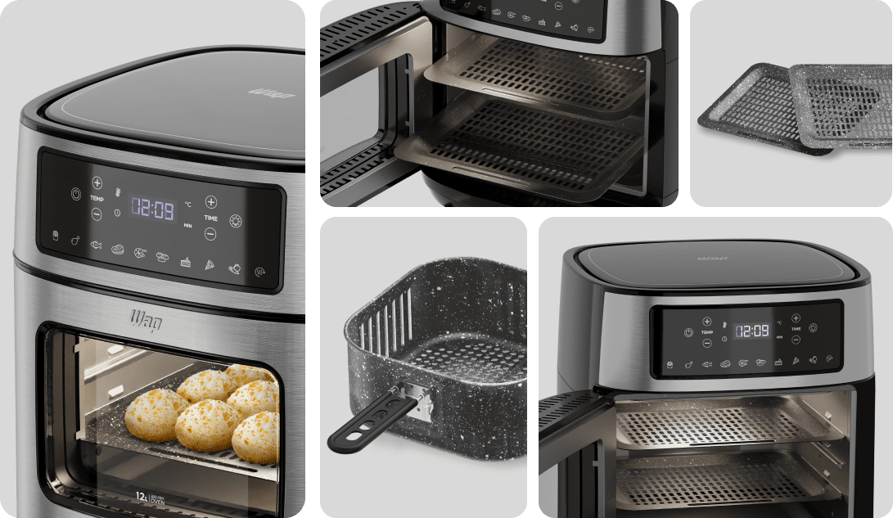

PROSDÓCIMO
PAINEL DIGITAL
Intuitivo, ele possui 10 funções pré-programadas, incluindo as receitas clássicas de air fryer, mais a função reaquecer.
PORTA COM VISOR
A porta com abertura lateral, equipada com visor e luz interna, permite monitorar refeições sem abrir, mantendo calor.
CIRCULAÇÃO DE AR
Assa o alimento por igual, crocante por fora e macio por dentro, sem excesso de óleo, para pratos mais saudáveis.
DESCUBRA A REVOLUÇÃO CULINÁRIA COM A AIRFRY OVEN DIGITAL
AirFry Oven Digital da WAP - A escolha ideal para o preparo de receitas dignas de um chef profissional, para toda família.
A WAP combinou as funcionalidades das fritadeiras air fryer com a versatilidade dos fornos convencionais para mudar a forma como você cozinha diariamente. Com dois andares e capacidade de 12 litros, você pode preparar vários pratos, de uma só vez, para a família toda.

12 LITROS
DE CAPACIDADE
Combine a eficiência da fritadeira elétrica com a versatilidade do forno convencional para preparar refeições saudáveis e deliciosas, em grandes quantidades, dignas de chef.
10 FUNÇÕES
PRÉ-PROGRAMADAS
Com 10 funções pré-programadas, incluindo as receitas clássicas de air fryer, mais a função reaquecer.

VERSATILIDADE PARA VOCÊ EXPLORAR
TODAS AS
POSSIBILIDADES
A Fritadeira AirFry Oven Digital da WAP é a escolha certa para quem busca uma solução culinária saudável e eficiente. Essencial na cozinha moderna por sua capacidade e versatilidade, ela permite que você crie pratos saborosos rapidamente, sem o uso de óleo.
CONJUNTO COMPLETO DE POSSIBILIDADES
+ POSSIBILIDADES


PORTA REMOVÍVEL
Para facilitar sua limpeza
CESTO
O cesto removível com 4,5 litros é perfeito para porções generosas.
Cesto removível com 4,5 litros.
BANDEJA COLETORA
A bandeja coletora de gordura assegura que suas refeições sejam tão saudáveis quanto deliciosas.
BANDEJA ANTIADERENTE
As duas bandejas com camada antiaderente oferecem versatilidade na preparação dos pratos.
FÁCIL LIMPEZA
As camadas antiaderentes marmorizadas Gray Stone, além de conferir charme aos acessórios, garante que os alimentos não grudem.
A porta com abertura lateral é removível para torna a limpeza uma tarefa rápida e descomplicada.
PAINEL DIGITAL
Intuitivo, ele possui 10 funções pré-programadas para facilitar sua rotina culinária, incluindo as receitas cotidianas e a função reaquecer.
FAÇA FRITURAS SEM
UTILIZAR ÓLEO.
É possível preparar frituras saborosas, crocantes por fora e macias por
dentro, com menos gordura! Com a Fritadeira Elétrica WAP AirFry Family 4L,
você chega no ponto ideal das receitas sem utilizar óleo ou manteiga no
preparo
Sua tecnologia permite fritar os alimentos com ar quente. A Air Fryer envolve
a comida, aquecendo e cozinhando internamente, sem usar o óleo, proporcionando
ótimos resultados.

CARDÁPIO DE CHEF
CARDÁDIO DE CHEF HENRIQUE FOGAÇA
Desperte seu paladar para uma rotina alimentar mais saudável e de dar água na
boca com receitas assinadas pelo Chef Henrique Fogaça.
De pratos principais a sobremesa, o chef irá revelar como usar todo o
potencial da linha de produtos de cozinha da WAP em suas receitas.

CIRCULAÇÃO DE AR
EM 360°
A tecnologia de circulação de ar em 360° garante um cozimento uniforme do alimento, deixando-o crocante por fora e macio por dentro, além de eliminar o óleo em excesso, proporcionando pratos mais saudáveis.
MAIS POSSIBILIDADES,
SEM PERDER O SABOR
A Fritadeira Elétrica AirFry Oven da WAP é potente e espaçosa, ideal para preparar alimentos maiores e em grandes quantidades. A Fritadeira Elétrica AirFry Oven da WAP é potente e espaçosa, ideal para preparar alimentos maiores e em grandes quantidades. Quer ver exemplos?
Faça um frango suculento, bolos deliciosos, batata frita ou até mesmo uma pizza bem recheada para compartilhar com os amigos, tudo de forma rápida e descomplicada.
TIMER DE 120 MIN
Tenha controle total no processo de cozimento com o timer, que emite um aviso sonoro ao final do preparo dos alimentos
TEMPERATURA DE ATÉ 200º C
O seletor de temperatura, com variação de 30°C a 200°C, permite que você escolha a opção ideal para diversos preparos.
SEGURANÇA NA ROTINA
Ao fim do tempo selecionado no timer, a fritadeira desliga automaticamente, emitindo um aviso sonoro.
PORTA REMOVÍVEL
Ao mover a trava, pressione o botão para retirar o cesto, facilitando a utilização e a limpeza interna da air fryer.
PORTA COM VISOR E LUZ INTERNA
A porta com abertura lateral, equipada com visor e luz interna permite que você acompanhe o progresso de suas refeições sem abrir a porta, mantendo o calor interno.
USE NA LAVA-LOUÇAS
Após o uso, você pode higienizar os acessórios da Fritadeira Elétrica AirFry Oven da WAP na lava-louça de forma prática.